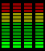
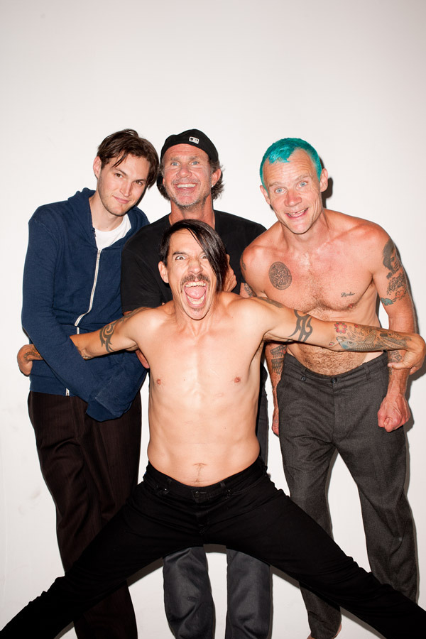

BIO
BIO

 Romanian cunt, I like music and conspiracy theories. I like talking about philosophical shit and history, especially the history of Romania. I believe that one day Romania will once again become a great kingdom and retake the territories it had during Burebista's rule of the Dacian Empire (a.k.a. Hungary, former yugoslavia, bulgaria and a chuck of ukraine). Other than that I'm pretty much your average Joe, exept for my hatred for the Americans and the French... God I cant STAND the French.
Romanian cunt, I like music and conspiracy theories. I like talking about philosophical shit and history, especially the history of Romania. I believe that one day Romania will once again become a great kingdom and retake the territories it had during Burebista's rule of the Dacian Empire (a.k.a. Hungary, former yugoslavia, bulgaria and a chuck of ukraine). Other than that I'm pretty much your average Joe, exept for my hatred for the Americans and the French... God I cant STAND the French.
| HATE THE FRENCH HATE THE FRENCH HATE THE FRENCH HATE THE FRENCH |

 HOBBIES
HOBBIES



 Favourite Media
Favourite Media
  |
My favourite bands have to be MUSE, RED HOT CHILI PEPPERS and Other than that I mainly listen to all kinds of rock and metal, Aerosmith, The Beatles, Metallica and some other shit. |
 |